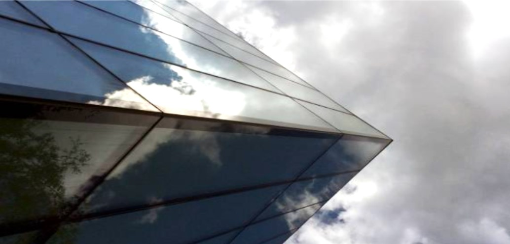

We have invested significantly in the Penrhyn Road campus, which is now home to the landmark Town House building, containing the library, cafes and performance spaces. Nearby you'll find the £20million John Galsworthy building and the Eadweard Muybridge and main buildings housing lecture theatres and teaching spaces.
We have also invested £15million on:
- science laboratories
- specialist facilities for subjects such as anatomy, psychology and radiology
- open access computing suites and library facilities
- informal learning areas where you can grab a coffee, socialise and unwind
- improved access for students with disabilities
- a refurbished and expanded learning resources centre.
The following subjects are based at Penrhyn Road:
